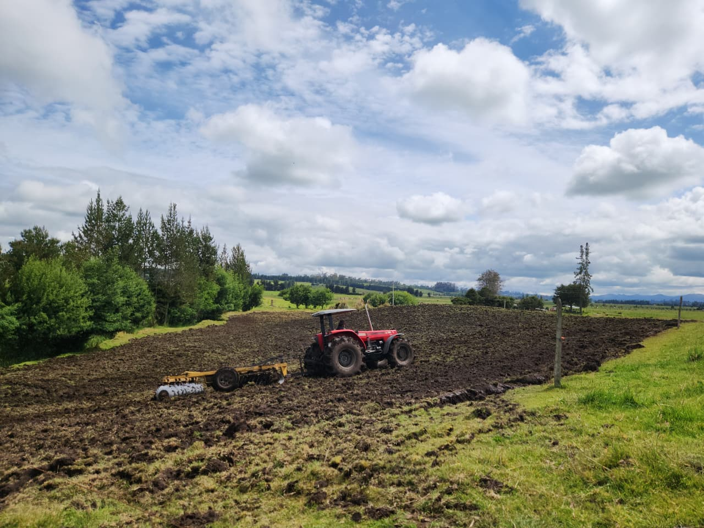

Construimos soluciones agro desde la realidad del campo, integrando conocimiento, trabajo y visión para generar crecimiento sostenible y oportunidades reales.
EDELROS nace de historias marcadas por el trabajo, la disciplina y la construcción desde cero en el campo, la ganadería y el comercio.
Hoy, una nueva generación transforma ese legado en una propuesta que integra conocimiento, experiencia y visión empresarial.
No heredamos el camino, lo estamos construyendo con propósito, compromiso y dirección.
Edelmira · Jorge · Rosa
Creemos en el campo como una oportunidad real de transformación. Trabajamos desde lo que tienes hoy para construir algo que crezca mañana, generando desarrollo, oportunidades y crecimiento sostenible.
“Crecer con propósito es honrar de dónde venimos y construir hacia dónde vamos.”
Procesos productivos enfocados en generar valor real desde la tierra.
Gestión eficiente y sostenible adaptada a cada contexto.
Capacitaciones prácticas y académicas para mejorar decisiones y resultados.
Estructuración de ideas que se convierten en ingresos reales y sostenibles.
Producción responsable que equilibra crecimiento, entorno y futuro.
Creemos en lo que construimos.
Cada acción tiene dirección.
Es nuestro origen y oportunidad.
Nadie crece solo, avanzamos juntos.
Persistimos con disciplina, seguimos incluso en los desafíos.
Construimos pensando en el futuro.
Tu punto de partida es suficiente
Nosotros te ayudamos a transformarlo en crecimiento.
Partimos de tu realidad y la convertimos en oportunidades reales.
Experiencia construida en el campo, aplicada en cada proceso.
Tu crecimiento es también nuestro compromiso.
Déjanos tus datos y te contactamos